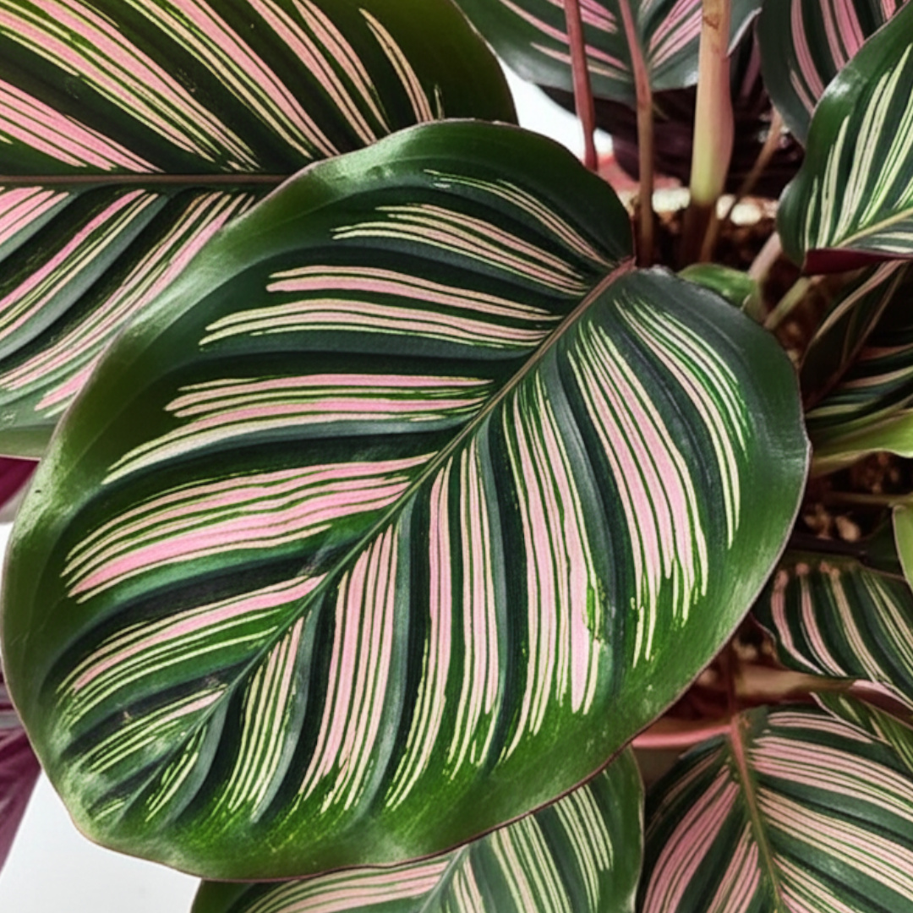

Calateia: A Beleza Segura e Vibrante para Seu Lar com Gatos

Para todo amante de plantas e, claro, de gatos, a busca por espécies que harmonizem com a curiosidade felina é constante. E é aqui que a calateia (do gênero Calathea, agora reclassificado em grande parte para Goeppertia) se destaca! Uma verdadeira joia botânica que une beleza exuberante, variedade impressionante e, o mais importante, total segurança para seus amigos de quatro patas.
Por Que a Calateia é a Queridinha dos Gateiros?
A principal razão para a popularidade das calateias entre os tutores de pets é sua natureza não-tóxica. Ao contrário de muitas plantas ornamentais que podem ser perigosas se ingeridas, as calateias são inofensivas para gatos e cães, permitindo que você decore seu lar com tranquilidade.
Mas a segurança é apenas o começo. As calateias são mestras em exibir folhagens espetaculares. Cada espécie e cultivar é uma obra de arte viva, com padrões, cores e texturas que parecem pintados à mão. Elas são nativas das florestas tropicais da América do Sul e Central, o que explica sua preferência por ambientes úmidos e sombrios.
O Fascinante Movimento Noturno: Plantas que Oram
Um dos aspectos mais cativantes das calateias é seu comportamento único, conhecido como nictinastia. Durante o dia, suas folhas se abrem para capturar a luz, exibindo seus padrões vibrantes. À medida que a noite cai e a luminosidade diminui, elas se dobram para cima, como se estivessem em oração. Este movimento diário não só é um espetáculo à parte, mas também um indicador de que sua planta está saudável e respondendo ao seu ambiente. Pela manhã, com o retorno da luz, as folhas se abrem novamente, reiniciando o ciclo.
Conheça a Diversidade das Calateias: Um Mundo de Cores e Padrões
O gênero Calathea (ou Goeppertia) é vasto, oferecendo uma infinidade de opções para todos os gostos. Conhecer alguns dos tipos mais populares pode te ajudar a escolher a calateia perfeita para seu lar:
- Calateia Orbifolia (Goeppertia orbifolia): Famosa por suas folhas grandes, arredondadas e com listras prateadas marcantes sobre um fundo verde-escuro. É uma das mais procuradas por sua elegância e impacto visual.
- Calateia Zebrina (Goeppertia zebrina): Suas folhas alongadas apresentam listras verde-escuras que lembram as de uma zebra, com o verso em um tom vibrante de roxo. Uma planta que realmente chama a atenção!
- Calateia Makoyana (Goeppertia makoyana), ou "Planta Pavão": Com folhas ovais que parecem desenhadas, exibindo manchas escuras que lembram penas de pavão e um verso em tom de vinho. É delicada e deslumbrante.
- Calateia Ornata (Goeppertia ornata), ou "Pinstripe Calathea": Caracteriza-se por finas listras rosadas ou brancas que adornam suas folhas verde-escuras, criando um contraste elegante e sofisticado.
- Calateia Medallion (Goeppertia veitchiana): Possui folhas grandes e arredondadas com padrões complexos de verde-claro, verde-escuro e toques de rosa, com o verso em um profundo tom de roxo.
- Calateia Triostar (Stromanthe sanguinea 'Triostar'): Embora tecnicamente uma Stromanthe, é frequentemente agrupada com as calateias devido à sua aparência e cuidados semelhantes. Suas folhas tricolores exibem tons de verde, creme e rosa, com um verso avermelhado, sendo uma das mais coloridas e desejadas.
Cuidados Essenciais para Sua Calateia Feliz (e Seu Gato Seguro!)
Para que suas calateias prosperem e continuem a exibir sua beleza e seus movimentos noturnos, alguns cuidados são fundamentais:
- Luz Indireta: Elas prosperam em luz indireta e brilhante. A luz solar direta pode queimar suas folhas delicadas e desbotar seus padrões. Um local próximo a uma janela voltada para o leste ou norte, ou afastado de janelas com sol forte, é o ideal.
- Rega Constante: Mantenha o solo sempre úmido, mas nunca encharcado. Permita que a camada superior do solo seque levemente entre as regas. O excesso de água pode levar ao apodrecimento das raízes, enquanto a falta pode causar folhas murchas e bordas secas.
- Alta Umidade: Sendo plantas tropicais, as calateias amam umidade! Se o ambiente for seco, as bordas das folhas podem ficar crocantes. Para aumentar a umidade, você pode borrifar água nas folhas regularmente (com água filtrada ou da chuva para evitar manchas), usar um umidificador próximo ou colocar o vaso sobre um prato com pedras e água (garantindo que o fundo do vaso não fique submerso).
- Solo Bem Drenável: Um substrato que retenha umidade, mas que seja bem drenável, é crucial. Misturas para plantas tropicais ou substratos ricos em matéria orgânica, como turfa e perlita, são excelentes escolhas.
- Temperatura Agradável: Mantenha a planta em temperaturas amenas e estáveis, idealmente entre 18°C e 27°C, evitando correntes de ar frias ou mudanças bruscas de temperatura.
- Adubação: Durante a primavera e o verão, adube a cada 2-4 semanas com um fertilizante líquido balanceado e diluído. Reduza ou suspenda a adubação no outono e inverno.
Atenção: Calateia não é Caládio!
É crucial reforçar: embora os nomes sejam parecidos, calateia (Calathea / Goeppertia) e caládio (Caladium) são plantas diferentes. O caládio é tóxico para gatos e deve ser evitado em casas com felinos curiosos. Sempre verifique o nome científico da planta antes de comprá-la para garantir a segurança de seus pets.
Com sua beleza inigualável, seus movimentos hipnotizantes e a tranquilidade de serem seguras para seus gatos, as calateias são, sem dúvida, uma adição valiosa e encantadora para qualquer lar. Escolha sua variedade favorita e prepare-se para se maravilhar com essa planta extraordinária!
Produtos indicados

Kit de Jardinagem em Madeira com Rastelo
Conjunto de ferramentas resistentes em madeira para cuidados com vasos e hortas pequenas.
Comprar
Gotejadores e Dosadores para Irrigação
Facilite a irrigação de vasos e hortas com dosagem controlada de água.
Comprar
Argila Expandida 3L
Perfeita para drenagem de vasos e composição de substratos leves e arejados.
Comprar
Húmus de Minhoca Verde Home
Fertilizante natural que melhora o solo e promove crescimento saudável das plantas.
Comprar
Perlita Expandida para Substrato
Melhora a aeração e drenagem do substrato, essencial para diversas plantas de interior.
Comprar
Casca de Pinus para Substrato
Substrato natural e decorativo, ideal para orquídeas e outras plantas epífitas.
Comprar